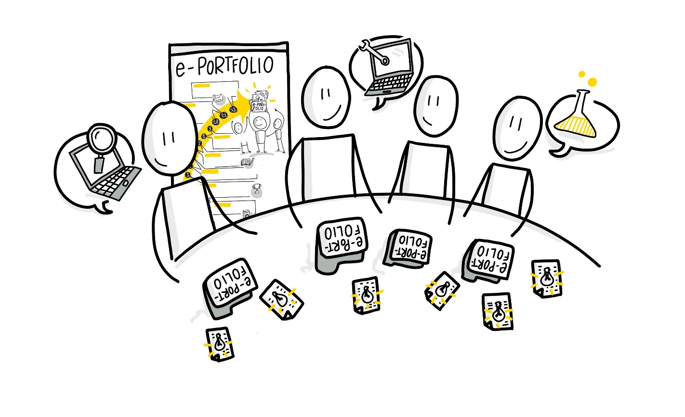

Learning area 4 - Topic article and learning reflection
Learning area 4 - Topic article and learning reflection
Creation and preparation of the first topic post and learning contemplation (weeks 6-7; with reference to the Content Curation circle guide week 8 -- types of curation)
Structure:
Week 6
- A) Searching and reading of first sources (Seeking method)
- B) Classification of the sources with short explanation (Sensemaking method)
- C) Instructions on how a good learning reflection can be processed
Week 7
- D) Short presentation of the entry level sources and integration into the first topic article / posting
- E) Publication of the article / if applicable video microlearning (Sharing method)
- F) Learning reflection round of the last two weeks

Week 6 - Investigation and reflection
A) Searching and reading of first sources (Seeking method) | (approx. 20 minutes)
After the tool selection for ePortfolios in the past two weeks, the focus is now back on content. In order to be able to create a first article on a topic, relevant information and people have to be searched for and discovered. Either information can be found automatically via social media channels, RSS feeds or content aggregators with artificial intelligence, like anderspink.com or refind.com. Or you actively search and observe yourself on content portals, in open knowledge resources - Open Educational Resources (OER), on YouTube, in blogs or search engines and social media channels. Exchange about possible concrete sources for your first professional contribution for your created topic interest.
B) Classification of the sources with short explanation (Sensemaking method) | (approx. 20 minutes)
How would you formulate a rationale for a good source? What are the basic criteria to be considered? Discuss this among yourselves.
Below is a small orientation from us that can help with the discussion:
Criteria that speak for high quality content: :
-
The author is an expert in his/her field. You can find this out by following them on social media channels like Twitter or LinkedIn, researching their posts, looking at their publication history or analyzing personal blogs or video channels. Very good experts are also often invited to lectures and events or recommended by colleagues from the network.
-
The contents quote sources and do not just reflect their own opinion. You can see this for example in links and references in texts or e.g. in the so-called shownotes of podcasts and links in YouTube videos.
-
Famous content providers such as publishing houses, portals or universities post or link to the content. The contents are linked, recommended and discussed by colleagues on social media channels and in blog posts and invite you to form an opinion and to get more closely involved with the author or the topic.
There are basically not THE criteria to classify the quality of a source. The perception of what is and what is not good quality content depends strongly on your own personality and preferences. For example, people who work in the natural sciences and are used to reading a lot and processing the information read quickly and effectively, scientific texts published by renowned universities and researchers feel more relevant and valuable than, for example, a short explanatory video that gets to the heart of exactly the same content in 5 minutes in an animated way.
Therefore it is especially valuable to give your readers a short personal assessment of why you consider the cited sources to be valuable and relevant and what you yourself have learned while working with these media.
This is also an ideal transition to the third point of today, the learning reflection.
C) Guidance on how a good learning reflection can be processed | (approx. 20 minutes)
The main goal of an ePortfolio is to make your own learning and the learning process visible. Of course you learn a lot by bringing together different sources and content on your topic, preparing them, processing them and then presenting them for discussion in the ePortfolio. But a not inconsiderable part of learning takes place through your reflection - i.e. thinking and observing how you learn (best) in which way, which activities are most beneficial for you, how you make connections to your existing knowledge. This deepens your knowledge, makes learning easier for you and helps you to plan your learning process more effectively. At the same time you show others how you learn. Therefore it is important that you develop your ability to reflect on your learning with your growing ePortfolio.
Share how you normally think about your learning and your learning process and how you reflect on it. Is this more incidentally and sporadic? Do you do this by telling others about your learning experiences, do you write something down for yourself? Do you collect ideas together and try out for yourself what would help you to reflect?
Here are a few useful questions from us to reflect on your learning process:
In general:
-
How would you describe your own learning so far? How planned / unplanned do you proceed? How effective do you rate your learning?
-
Which strategies and methods help you to learn in general, which do not?
-
What is your ideal learning place, your ideal learning environment? What must be there / not be there so that you can learn well?
-
How do you motivate yourself to learn?
Specific (related to a learning unit) - here the example of the Circle and your ePortfolio:
-
What were your goals, what did you want to learn?
-
What did you learn? Where do you stand today?
-
Where were you able to build on existing knowledge? Where did new knowledge connections emerge?
-
Are you satisfied with your learning progress?
-
What worked, what didnt? What were obstacles?
-
How can you strengthen what worked?
-
How can you overcome difficulties? Who can help you?
-
What helped you to motivate yourself? What were your happy moments while learning?
-
Where do you want to go? What are your next steps?
Basic kata in this week (approx. 1 hour):
Back up your previously formulated topic interest with suitable sources you have researched and prepare them together with the topic as a first topic contribution which you will present to the circle in the following week.
Advanced Kata in this week (approx. 1 hour):
Reflect on how easy or challenging the source work is for you and record it in a suitable way for discussion with others in the following week.
Week 7 - Publishing and reflection
D) Short presentation of the entry level sources and integration into the first topic article / posting | (approx. 20 minutes)
After you have dealt with three basic methods of content curation last week and were able to learn about the core competence of ePortfolio learning, the reflection, in the second part, this week will be about deepening the insights you have gained. First introduce each other to a suitable selection of sources you have investigated and how you have prepared them for your topic contribution. Give each other a short feedback on that.
E) Publication of the article / if applicable video microlearning (Sharing method) | (approx. 20 minutes)
The core task this week is to actually make your first contribution available to your audience via your ePortfolio. This can be done at a self-chosen, suitable time during the week and can be published via suitable media formats. An important approach is to describe a valuable blog post or video in such a way that it will be noticed by your followers or interested persons on social media channels like Twitter or LinkedIn or even internal channels within the organization like Connections. Your target group might be interested in answering the following questions, which you can go through briefly together in the circle:
-
How long does it take to work through the content?
-
What are my personal experiences or insights from others?
-
Why should my followers deal with the content?
-
For whom and why is this content particularly valuable (keyword: learning effect)?
-
What further questions have arisen from working through the content?
-
What is my opinion of the content? What is my reasoning for this?
-
What distribution channels does your content fit into best?
F) Learning reflection round of the last two weeks | (approx. 20 minutes)
Pick up on your reflective talk from last week and think about how you would like to personally reflect on your learning in the future. Start with a few simple questions and reflections and refine it over the next weeks. Create a reflection area in your portfolio and set a rhythm in which you want to reflect on your learning. This can be published as a reflective topic contribution or part of a contribution or even as a separate page in the ePortfolio. The advantage of a separate page is the clear separation between subject content and the overall reflection process. Discuss which path you would like to take here.
Basic kata in this week (about 1 to 2 hours):
In addition to the publication of the first topic contribution which should take place now at the latest, please start thinking about what other ideas for topic contributions you have in the upcoming weeks. You should bring them along as a basis for discussion for the exchange in the circle next week.
Advanced video kata for reflection (about 1 hour):
Present in a short video podcast episode what you have learned for yourself in the last two weeks and up to this point in the circle about the topic and the approach to your topic.